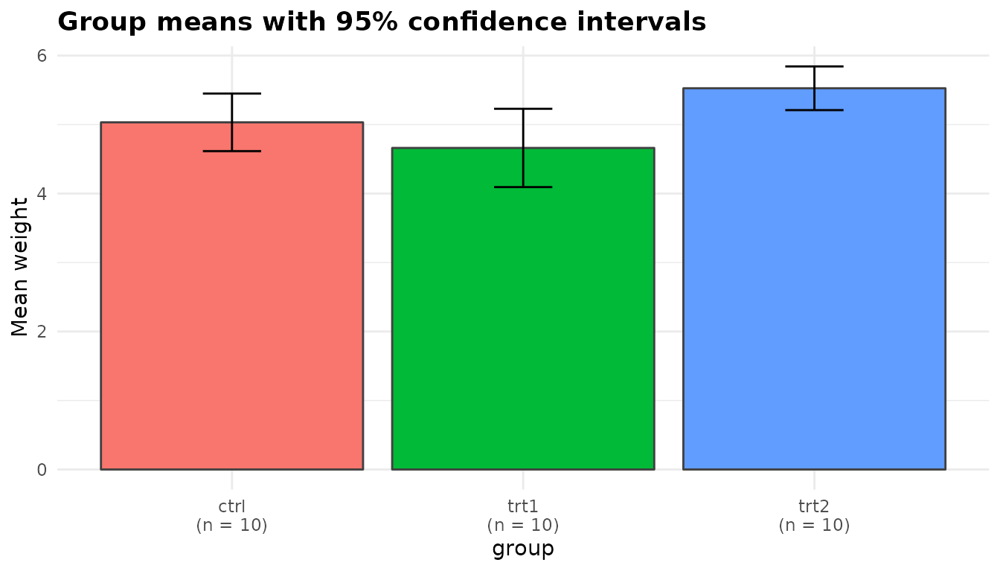
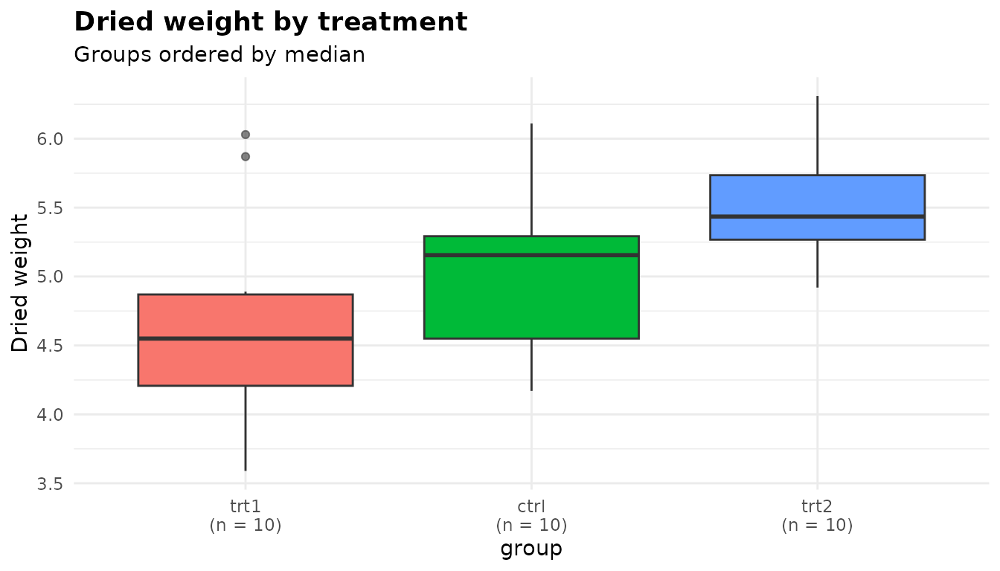

anova_welch() compares the mean of a numeric response
across two or more groups without assuming that the groups share a
variance. It is the package’s default choice for a one-way comparison of
means: when the variances are equal it gives up almost nothing to the
classical F test, and when they are not it keeps its stated error rate
where the classical test does not. If the response is heavily skewed,
ordinal, or has values that are only “more extreme” rather than
measured, compare ranks with anova_kw() (walkthrough). To adjust for a covariate
use anova_ancova(), and to separate the main effects and
interaction of two or more factors use anova_glm() (walkthrough). The decision
guide covers the choice in more detail.
The data
PlantGrowth records the dried weight of 30 plants, ten
grown under control conditions and ten under each of two treatments.
head(PlantGrowth)
#> weight group
#> 1 4.17 ctrl
#> 2 5.58 ctrl
#> 3 5.18 ctrl
#> 4 6.11 ctrl
#> 5 4.50 ctrl
#> 6 4.61 ctrl
table(PlantGrowth$group)
#>
#> ctrl trt1 trt2
#> 10 10 10
sds <- tapply(PlantGrowth$weight, PlantGrowth$group, sd)
round(cbind(mean = tapply(PlantGrowth$weight, PlantGrowth$group, mean),
sd = sds), 3)
#> mean sd
#> ctrl 5.032 0.583
#> trt1 4.661 0.794
#> trt2 5.526 0.443The question is whether the treatments change the mean weight. The
standard deviations are not the same: trt1 varies about
1.79 times as much as trt2, so its variance is about 3.22
times as large. With groups this small you cannot tell whether that is a
real difference in spread or sampling noise, and that uncertainty is
exactly the case for a test that does not need to know.
Fitting the model
Columns are named as character strings: the response, then one or more grouping columns.
fit <- anova_welch(PlantGrowth, "weight", "group")
fit
#> Welch's analysis of variance
#> ----------------------------
#> Call: anova_welch(data = PlantGrowth, response = "weight", groups = "group")
#> Observations used: 30
#>
#> Omnibus test
#> term statistic num_df den_df p_value
#> 1 group 5.181 2 17.13 0.01739
#>
#> Plots available: means, box, qq
#> (use plot(x, which = "means"))Reading the printout from the top:
- The first line names the method, and
Call:records how the fit was made. -
Observations used: 30is the number of rows analysed. Had any rows been dropped for a missing or infinite value, the count would appear here with a pointer to$notes. -
Omnibus testis the Welch test itself, described in the next section. - There is no
Notesblock, because the function had nothing to report for these data. What the notes say below explains when it does. -
Plots availablelists the three plots stored in$plots.
summary(fit) prints the same header followed by every
table the fit holds: the assumption checks, effect sizes, group
summaries and pairwise comparisons. The sections below take those one at
a time.
The omnibus test
fit$anova
#> term statistic num_df den_df p_value
#> 1 group 5.180972 2 17.12842 0.01739282-
termis the grouping column (or a label for the combined cells when there are several; see below). -
statisticis Welch’s F. It is built from each group’s own variance, with each group’s mean weighted by its precision (its size over its variance), so a noisy group counts for less. -
num_dfis the number of groups minus one. -
den_dfis Welch’s approximate denominator degrees of freedom, estimated from the group sizes and variances. It is not on the same footing as the classical test’s 30 - 3 = 27. With three groups of ten it would be 18 even if the three sample variances were identical, and it falls as they diverge: here it is 17.13. -
p_valueis the probability of an F at least this large if all the group means were equal.
The test is stats::oneway.test() with
var.equal = FALSE, and the htest object it
returns is kept in $model. There is no fitted model, so
$emmeans_object is NULL.
fit$model
#>
#> One-way analysis of means (not assuming equal variances)
#>
#> data: weight and group
#> F = 5.181, num df = 2.000, denom df = 17.128, p-value = 0.01739
oneway.test(weight ~ group, data = PlantGrowth, var.equal = TRUE)
#>
#> One-way analysis of means
#>
#> data: weight and group
#> F = 4.8461, num df = 2, denom df = 27, p-value = 0.01591The classical F test, shown second, happens to reach a similar conclusion here (p = 0.016 against 0.017). That will not always be so.
Why not the classical F test?
InsectSprays counts the insects left on plots treated
with six sprays, twelve plots per spray. The spreads differ a great
deal:
round(tapply(InsectSprays$count, InsectSprays$spray, sd), 2)
#> A B C D E F
#> 4.72 4.27 1.98 2.50 1.73 6.21
ins <- anova_welch(InsectSprays, "count", "spray")
ins$anova
#> term statistic num_df den_df p_value
#> 1 spray 36.06544 5 30.04256 7.999379e-12
ins$notes
#> [1] "Largest group variance is 12.9 times the smallest. Welch's test handles this; the classical F test would not."The note fires whenever the largest group variance is more than four times the smallest. Here it is 12.87 times. The difference between the sprays is so large that both tests reject overwhelmingly, so these data cannot show what goes wrong. For that you need a case where the truth is known.
The simulation below draws data in which every group has the
same mean, so any rejection is a false positive, and in
which the smallest group is the noisiest. It also includes two
equal-variance settings, one with no difference and one with a real one,
to show what Welch’s test costs when its protection is not needed.
anova_welch()’s omnibus test is oneway.test(),
so the simulation calls that directly.
set.seed(2024)
reject_rate <- function(n, sd, mu = rep(0, length(n)), reps = 2000) {
g <- factor(rep(seq_along(n), n))
p <- replicate(reps, {
y <- rnorm(sum(n), mean = rep(mu, n), sd = rep(sd, n))
c(classical = oneway.test(y ~ g, var.equal = TRUE)$p.value,
welch = oneway.test(y ~ g)$p.value)
})
rowMeans(p < 0.05)
}
sim <- rbind(
"equal SDs, no difference" = reject_rate(c(10, 10, 10), c(1, 1, 1)),
"equal SDs, means 0, 0.5, 1" = reject_rate(c(10, 10, 10), c(1, 1, 1),
mu = c(0, 0.5, 1)),
"SDs 4/2/1, n 10/20/30, no difference" =
reject_rate(c(10, 20, 30), c(4, 2, 1))
)
sim
#> classical welch
#> equal SDs, no difference 0.0510 0.0525
#> equal SDs, means 0, 0.5, 1 0.4445 0.4215
#> SDs 4/2/1, n 10/20/30, no difference 0.1970 0.0535Each rate is estimated from 2,000 data sets, so a rate near 5% is accurate to about half a percentage point, and one near 45% to about one point. At a nominal 5% level:
- With equal variances and no difference, both tests reject about 5% of the time (5.1% classical, 5.2% Welch).
- With equal variances and a real difference, Welch’s test is only a little less powerful (42.1% against 44.5%).
- When the smallest group is the noisiest, the classical test rejects a true null in 19.7% of data sets, about 4 times its nominal rate, while Welch’s stays at 5.3%.
The classical test pools the variances, so a small, noisy group is treated as if it were as precise as the others, and its chance deviations look like real differences. Unequal variances paired with unequal group sizes are common in observational data, and you rarely know in advance that you are not in that situation. That is why Welch’s test is the default.
Effect sizes
print(fit$effect_sizes, digits = 3)
#> group1 group2 hedges_g conf_low conf_high magnitude standardiser
#> 1 ctrl trt1 0.508 -0.37 1.41993 medium sqrt((s1^2 + s2^2) / 2)
#> 2 ctrl trt2 -0.911 -1.88 -0.00867 large sqrt((s1^2 + s2^2) / 2)
#> 3 trt1 trt2 -1.273 -2.33 -0.32291 large sqrt((s1^2 + s2^2) / 2)Each row is a standardised mean difference for one pair of groups, in
the same direction as the pairwise difference (group1 minus
group2).
The standardiser. Each difference in means is
divided by \(s^* = \sqrt{(s_1^2 +
s_2^2)/2}\), the square root of the average of the two groups’
variances, as the standardiser column records. The usual
pooled standard deviation assumes the two variances are equal: its
meaning and its sampling variance both depend on that. The
average-variance standardiser does not, so the effect size makes the
same assumption as the test. You can check the arithmetic for
ctrl against trt1:
m <- tapply(PlantGrowth$weight, PlantGrowth$group, mean)
s_star <- sqrt((sds[["ctrl"]]^2 + sds[["trt1"]]^2) / 2)
d_ct <- (m[["ctrl"]] - m[["trt1"]]) / s_star
d_ct
#> [1] 0.5327478The bias correction. That value is Cohen’s d on the
average-variance standardiser. By default
(hedges_correction = TRUE) the estimate is multiplied by
Hedges’ small-sample correction, evaluated at the Satterthwaite degrees
of freedom of the standardiser, and the column is called
hedges_g. The correction shrinks the estimate slightly
towards zero, here from 0.533 to 0.508.
The interval. conf_low and
conf_high are an interval for the population value \(\delta^* = (\mu_1 - \mu_2) / \sqrt{(\sigma_1^2 +
\sigma_2^2)/2}\). It is found by inverting the noncentral t
distribution of Welch’s statistic on Welch’s degrees of freedom, then
rescaling to the average-variance standardiser. Because the interval is
for \(\delta^*\) itself, it is the same
whether or not the point estimate is bias-corrected. It is the interval
that effectsize::cohens_d(pooled_sd = FALSE) reports:
two <- droplevels(subset(PlantGrowth, group %in% c("ctrl", "trt1")))
effectsize::cohens_d(weight ~ group, data = two, pooled_sd = FALSE)
#> Cohen's d | 95% CI
#> -------------------------
#> 0.53 | [-0.37, 1.42]
#>
#> - Estimated using un-pooled SD.The labels. magnitude applies Cohen’s
conventional thresholds of 0.2, 0.5 and 0.8 to the absolute value. The
labels are a rough guide. Look at the interval too: the
ctrl versus trt1 estimate is labelled
“medium”, but its interval runs from -0.37 to 1.42 and so is consistent
with anything from a small effect in the other direction to a large
one.
Group means and comparisons
No model is fitted, so $emmeans holds plain group
summaries: each group’s size, mean, standard deviation and standard
error, with a t interval for the mean built from that group’s own
standard deviation.
fit$emmeans
#> group n mean sd se conf_low conf_high
#> 1 ctrl 10 5.032 0.5830914 0.1843897 4.614882 5.449118
#> 2 trt1 10 4.661 0.7936757 0.2509823 4.093239 5.228761
#> 3 trt2 10 5.526 0.4425733 0.1399540 5.209402 5.842598$posthoc holds one row per pair of groups:
print(fit$posthoc, digits = 3)
#> group1 group2 difference conf_low conf_high statistic df p_value p_adjusted
#> 1 ctrl trt1 0.371 -0.288 1.02952 1.19 16.5 0.2504 0.2504
#> 2 ctrl trt2 -0.494 -0.983 -0.00513 -2.13 16.8 0.0479 0.0958
#> 3 trt1 trt2 -0.865 -1.481 -0.24909 -3.01 14.1 0.0093 0.0279
#> adjustment
#> 1 holm
#> 2 holm
#> 3 holmThis is not the Games-Howell procedure, although it
is related. Both use, for each pair, a standard error and degrees of
freedom built from those two groups alone. Games-Howell then refers the
statistic to the studentised range distribution to get simultaneous
intervals. anova_welch() does something simpler:
- For each of the
choose(k, 2)pairs it runsstats::t.test()withvar.equal = FALSEon the two groups’ data. That givesdifference(group1minusgroup2), the intervalconf_lowtoconf_high, the Welch tstatistic, its owndf, and the unadjusted two-sidedp_value. - It then passes all the p-values to
stats::p.adjust()with the method inadjust(Holm by default). The result isp_adjusted, and the method is recorded inadjustment.
As in every function in the package, p_value is
unadjusted and p_adjusted is adjusted. The intervals are
not adjusted: each is an ordinary 95% interval for that
one difference. The third row is exactly the Welch t test of
trt1 against trt2:
trts <- droplevels(subset(PlantGrowth, group != "ctrl"))
t.test(weight ~ group, data = trts)$p.value
#> [1] 0.009298405Reading the table: trt2 plants were heavier than
trt1 plants by 0.865, and that difference survives the Holm
adjustment (adjusted p = 0.028). The ctrl versus
trt2 difference has an unadjusted p of 0.048 but an
adjusted one of 0.096: on its own it would pass at 5%, but not once you
allow for having made three comparisons.
"tukey" is not an accepted adjust method
here, as it is on the functions whose comparisons come from
emmeans. These are separate Welch t tests, not linear
contrasts on a shared error term:
anova_welch(PlantGrowth, "weight", "group", adjust = "tukey")
#> Error: `adjust` must be one of: holm, hochberg, hommel, bonferroni, BH, BY, fdr, none; got "tukey".Checking assumptions
Welch’s test drops the equal-variance assumption but keeps the others: the observations are independent, and the mean of each group is approximately normally distributed, which holds when each group’s data are roughly normal or the groups are reasonably large.
fit$assumptions$normality
#> group n statistic p_value note
#> 1 ctrl 10 0.9566815 0.7474734 <NA>
#> 2 trt1 10 0.9304107 0.4519440 <NA>
#> 3 trt2 10 0.9410052 0.5642519 <NA>
fit$assumptions$variance_ratio
#> [1] 3.215998Normality within each group. The Shapiro-Wilk test
is run separately for each group, not on pooled residuals. Pooling
residuals from groups with different spreads produces a mixture that can
fail a normality test even when every group is perfectly normal, which
would argue against the very method being used. A group with fewer than
3 or more than 5,000 observations is not tested. Its row then has a
reason in the note column, and $notes names
it. None of the three groups here gives cause for concern, but with ten
observations the test has little power, so read the Q-Q plot below as
well.
The variance ratio is the largest group variance
divided by the smallest. It is information rather than a test: Welch’s
method does not need it to be close to 1. Above 4, $notes
points it out, as it did for InsectSprays.
If a group is clearly skewed or has outliers, the mean may not be the
summary you want. Compare ranks with anova_kw(), or model
the response’s distribution with anova_glm() (a Gamma
family for a positive, right-skewed response, for example). The diagnostics article covers the checks across
the whole package.
Plots
The fit holds three ggplot2 objects. None is drawn until you ask for it.
plot(fit, "means")
The means plot shows each group’s mean as a bar, with
its 95% interval from $emmeans, and the group size under
each label. Each interval is built from its own group’s standard
deviation, so different widths reflect different spreads (and sizes).
The intervals here are for the group means, not for the differences
between them: two intervals that overlap do not mean the difference is
non-significant. Read the comparisons from $posthoc.
plot(fit, "box")The box plot shows the raw distribution of each group,
ordered by median and labelled with its size. This is where unequal
spreads, skewness and outliers show up. Here trt1 is
visibly more spread out than trt2, and two
trt1 plants lie above its upper whisker.
plot(fit, "qq")
The qq plot is for normality. Each observation is
expressed as its deviation from its own group’s mean, divided by its own
group’s standard deviation, so every group contributes on its own scale,
as Welch’s test allows. If the groups are roughly normal the points
follow the dashed line. A bow away from the line suggests skewness, and
a few isolated points far from it suggest outliers. Here the points
follow the line closely through the middle. The largest few sit a little
above it, among them the two high trt1 plants, at 1.52 and
1.72 standard deviations above their group mean. That is a hint of right
skew, but departures of this size are common in 30 points drawn from a
normal distribution.
Each plot is an ordinary ggplot object, so you can change it with
+:

The plots article covers customisation in more detail.
Options worth knowing
adjust
adjust accepts any stats::p.adjust()
method, spelled out in full: "holm" (the default),
"hochberg", "hommel",
"bonferroni", "BH", "BY",
"fdr" or "none". Only p_adjusted
changes. Holm controls the family-wise error rate and is never less
powerful than Bonferroni. Benjamini-Hochberg ("BH")
controls the false discovery rate instead, which suits screening many
comparisons.
adj <- sapply(c("holm", "BH", "bonferroni", "none"), function(a)
anova_welch(PlantGrowth, "weight", "group", adjust = a,
plots = FALSE)$posthoc$p_adjusted)
cbind(fit$posthoc[, c("group1", "group2")], round(adj, 4))
#> group1 group2 holm BH bonferroni none
#> 1 ctrl trt1 0.2504 0.2504 0.7511 0.2504
#> 2 ctrl trt2 0.0958 0.0718 0.1437 0.0479
#> 3 trt1 trt2 0.0279 0.0279 0.0279 0.0093
conf_level
conf_level sets the level of every
interval the function returns: the group means, the pairwise differences
and the standardised effect sizes (and the title of the
means plot).
f90 <- anova_welch(PlantGrowth, "weight", "group", conf_level = 0.90)
f90$emmeans[, c("group", "mean", "conf_low", "conf_high")]
#> group mean conf_low conf_high
#> 1 ctrl 5.032 4.693993 5.370007
#> 2 trt1 4.661 4.200921 5.121079
#> 3 trt2 5.526 5.269449 5.782551
print(f90$effect_sizes[, c("group1", "group2", "hedges_g", "conf_low",
"conf_high")], digits = 3)
#> group1 group2 hedges_g conf_low conf_high
#> 1 ctrl trt1 0.508 -0.226 1.276
#> 2 ctrl trt2 -0.911 -1.724 -0.158
#> 3 trt1 trt2 -1.273 -2.170 -0.482Because the comparison intervals are per-comparison, one way to get
Bonferroni-simultaneous intervals for all three differences is to ask
for conf_level = 1 - 0.05 / 3. That widens the group-mean
and effect-size intervals too.
hedges_correction
With hedges_correction = FALSE the effect size is the
uncorrected standardised difference, and the column is named
cohens_d. The intervals are unchanged, because they are for
the population value either way.
d <- anova_welch(PlantGrowth, "weight", "group", hedges_correction = FALSE,
plots = FALSE)
print(d$effect_sizes[, c("group1", "group2", "cohens_d", "conf_low",
"conf_high")], digits = 3)
#> group1 group2 cohens_d conf_low conf_high
#> 1 ctrl trt1 0.533 -0.37 1.41993
#> 2 ctrl trt2 -0.954 -1.88 -0.00867
#> 3 trt1 trt2 -1.346 -2.33 -0.32291
posthoc
There are choose(k, 2) pairs, so with many groups you
may want only the omnibus test. The standardised differences are
computed pair by pair alongside the comparisons, so
posthoc = FALSE empties $effect_sizes too, and
$notes says so:
np <- anova_welch(PlantGrowth, "weight", "group", posthoc = FALSE,
plots = FALSE)
np$notes
#> [1] "Pairwise comparisons were not computed (posthoc = FALSE); there would have been 3. $effect_sizes is empty for the same reason: Hedges' g is a per-pair quantity, computed with the comparisons."
is.null(np$effect_sizes)
#> [1] TRUESeveral grouping columns
warpbreaks counts the warp breaks per loom for two types
of wool at three levels of tension. Given both columns,
anova_welch() combines them into a single factor of the
level combinations that contain data (unused combinations are dropped)
and runs one Welch test across those cells:
wb <- anova_welch(warpbreaks, "breaks", c("wool", "tension"))
wb$anova
#> term statistic num_df den_df p_value
#> 1 wool x tension cells 4.555543 5 21.78918 0.005381049
wb$emmeans[, c("group", "n", "mean", "sd")]
#> group n mean sd
#> 1 A : L 9 44.55556 18.097729
#> 2 B : L 9 28.22222 9.858724
#> 3 A : M 9 24.00000 8.660254
#> 4 B : M 9 28.77778 9.431036
#> 5 A : H 9 24.55556 10.272671
#> 6 B : H 9 18.77778 4.893306
wb$notes
#> [1] "The 2 grouping variables were combined into 6 cells and tested with a single omnibus Welch test. This cannot separate main effects or test an interaction; for that, use anova_glm() with interaction = TRUE."
#> [2] "Largest group variance is 13.7 times the smallest. Welch's test handles this; the classical F test would not."The term reads wool x tension cells, and
the cells are labelled A : L, B : L and so on.
The test asks whether the six cell means are all equal. It cannot tell a
wool effect from a tension effect, or test whether the effect of tension
depends on the wool, and the first note says so. For that factorial
question use anova_glm() with
interaction = TRUE (walkthrough).
The second note shows that the cell variances differ by a factor of more
than 13, which is the situation Welch’s test is built for.
Two groups
With two groups the single pairwise comparison is the omnibus test: Welch’s F is the square of the Welch t, the p-values are identical, and no adjustment is applied.
f2g <- anova_welch(two, "weight", "group", plots = FALSE)
f2g$anova
#> term statistic num_df den_df p_value
#> 1 group 1.419101 1 16.52359 0.2503825
f2g$posthoc[, c("statistic", "df", "p_value", "p_adjusted")]
#> statistic df p_value p_adjusted
#> 1 1.19126 16.52359 0.2503825 0.2503825
f2g$notes
#> [1] "With two groups the pairwise comparison is the omnibus test; no multiplicity adjustment was needed."What the notes say
fit$notes
#> character(0)For the PlantGrowth fit, $notes is empty.
No rows were dropped, every group was large enough for its Shapiro-Wilk
test, the variance ratio was below 4, there was one grouping column, and
there were more than two groups. Each of those would otherwise have
produced a note. You have seen several above: the variance ratio
(InsectSprays), combined cells (warpbreaks),
two groups, and posthoc = FALSE. The function also writes a
note if you ask for a low conf_level with very small groups
and the bias-corrected estimate falls outside its own interval. Read
$notes on every fit, including when you expect it to be
empty.
Reporting the result
A write-up built from the fit with inline R, so that the numbers cannot drift from the analysis:
Dried plant weight differed between the three conditions (Welch’s F(2, 17.13) = 5.18, p = 0.017). In pairwise Welch t tests with Holm’s adjustment, plants given treatment 2 were heavier than those given treatment 1 by 0.865 (95% CI 0.249 to 1.481; Hedges’ g on the average-variance standard deviation = 1.27, 95% CI 0.32 to 2.33; adjusted p = 0.028). Neither treatment differed clearly from the control after adjustment (treatment 1: adjusted p = 0.250; treatment 2: adjusted p = 0.096).
The signs are flipped from the table so that the sentence reads “treatment 2 minus treatment 1”. State which standardiser you used: a Hedges’ g on the pooled standard deviation is a different quantity.
See also
-
anova_kw()and the Kruskal-Wallis walkthrough for a rank-based comparison. -
anova_glm()and the analysis-of-deviance walkthrough for factorial designs. -
anova_ancova()and the ANCOVA walkthrough to adjust for a covariate. - Working with results for the structure of the returned object and more on reporting.
- Diagnostics across the package and Plots and visual customisation.
- The Get Started vignette for a tour of every function.